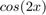
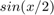
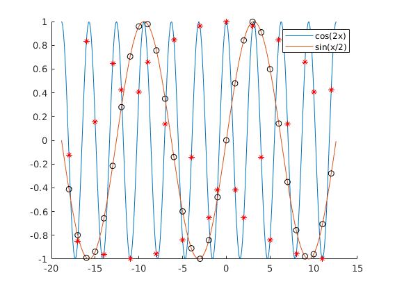
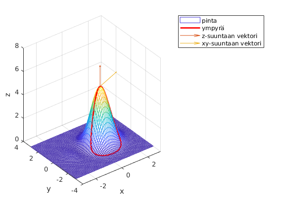
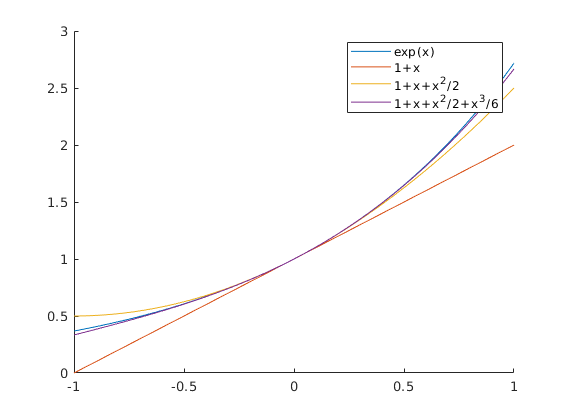
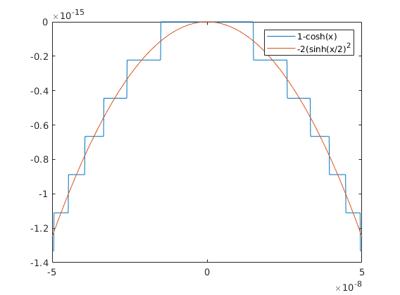

Viikko 10 tehtävät
- Harjoitus 1
- Arno Törö
Contents
Tehtävä 1
Piirretään funktiot
 ja 
samaan kuvaan eri väreillä. Käytetään for-looppia luomaan käyrille merkkejä haluttuihin kohtiin.
clc;clear;close all % a.) kohta % määritetään funktiot ja x x = -6*pi:.1:4*pi; y1 = cos(2*x); y2 = sin(x/2); figure(1); hold on; plot(x, y1); plot(x, y2); % b.) kohta for x = -18:12 plot(x, cos(2*x), 'r*'); plot(x, sin(x/2), 'ko') end legend('cos(2x)', 'sin(x/2)');
Tehtävä 2
clc;clear;close all % pinnan piirtäminen [X,Y] = meshgrid(-3:.1:3); % määritetään muuttujien rajat F = @(X,Y) (X+1).^2.*exp(1-X.^2-Y.^2); figure(1); mesh(X, Y, F(X,Y)); xlabel('x'); ylabel('y'); zlabel('z'); % xy-tason ympyrän piirtäminen pinnalle t = 0:.01:2*pi; x = sin(t) + 1/2; y = cos(t) - 1; z = F(x,y); % ympyrän asettaminen funktion pinnalle hold on plot3(x, y, z, Color='red', LineWidth=2); % LineWidth suuremmaksi ja väri vaihtoon, % erottuu helpommin % vektorit kukkulan huipulle, % kukkulan huipun arvot tehtävänannosta x1 = 0.6180; y1 = 0; quiver3(x1, y1, F(x1,y1), 0, 0 ,2); % z-suuntaan quiver3(x1, y1, F(x1,y1), 2, 1 ,0); % xy-suuntaan legend('pinta', 'ympyrä', 'z-suuntaan vektori', 'xy-suuntaan vektori');
Tehtävä 3
Maclaurin sarjakehitelmän demoaminen.
clc;close all;clear % funktioiden määrittely F3 = @(x) exp(x); F31 = @(x) 1 + x; F32 = @(x) 1 + x + x.^2 / 2; F33 = @(x) 1 + x + x.^2 / 2 + x.^3 / 6; ax =[-1 1]; figure(1); hold on; legend; fplot(F3, ax); % funktio nollan ympärillä fplot(F31, ax); % 1. asteen sarjakehitelmä fplot(F32, ax); % 2.asteen sarjakehitelmä fplot(F33, ax); % 3. asteen sarjakehitelmä % funktioiden arvot pisteessä 0.3 alkup = F3(0.3) % alkup. funktio aste1 = F31(0.3) % 1.aste aste2 = F32(0.3) % 2.aste aste3 = F33(0.3) % 3.aste
alkup =
1.3499
aste1 =
1.3000
aste2 =
1.3450
aste3 =
1.3495
 Tehtävä 4
pysty- ja vaakavektoreiden yhteenlaskua ja kokeilua.
clc;clear % pystyvektorit v1 = [1;2;3]; v2 = [2;3;1]; vp = v1+v2 % vaakavektorit v3 = [1,2,3]; v4 = [2,3,1]; vv = v3+v4 % 1. vaaka, 2. pysty vvp = v4+v2 % 1. pysty, 2. vaaka vpv = v1+v3 % Matlab laskee yhteen 1. vektorin jokaisen alkion 2. % vektorin kanssa ja palauttaa NxM matriisin, jonka koko riippuu yhteenlas % kettavien vektorien dimensioista.
vp =
3
5
4
vv =
3 5 4
vvp =
4 5 3
5 6 4
3 4 2
vpv =
2 3 4
3 4 5
4 5 6
Tehtävä 5
clc;clear;close all f = @(x) sin(x); g = @(x) cos(2*x); h = @(x) cos(3*x); fun = @(x) [f(x);g(x);h(x)]; % fun määritys % esimerkkikäsky v = fun(pi) w = fun(0)
v =
0.0000
1.0000
-1.0000
w =
0
1
1
Tehtävä 6
Matlabin omien funktioiden muodostamista ja käyttämistä.
clc;clear;close all % vektorien alkioiden summan laskeminen itse tehdyn funktion avulla v = 1:5; S = teht1(v) % kahden syötetyn summan peruslaskutoimitukset funktion avulla [ero, summa, tulo, osam] = teht2(2,3) % luvun etumerkin tarkistaminen funktion avulla merkki1 = teht3(3) % palauttaa plus merkki2 = teht3(0) % palauttaa nolla merkki3 = teht3(-955) % palauttaa miinus % vektorin negatiivisten ja positiivisten alkioiden erillinen yhteenalasku. v1 = [-1 2 3 -4 0]; v2 = [2 3 -42 10 -9]; % M = miinusmerkkiset ja P = plusmerkkiset [M1, P1] = teht4(v1) [M2, P2] = teht4(v2)
S =
15
ero =
-1
summa =
5
tulo =
6
osam =
0.6667
merkki1 =
'plus'
merkki2 =
'nolla'
merkki3 =
'miinus'
M1 =
-5
P1 =
5
M2 =
-51
P2 =
15
Tehtävä 6 funktiot
Alla tehtävässä 6 käytetyt funktiotiedostot 1-4.
function [summa] = teht1(vektori) % Funktio [summa] = teht1(vektori) laskee sille syötetyn vektorin % alkioiden summan. pituus = length(vektori); summa = 0; for i = 1:pituus summa = summa + vektori(i); end end
function [ero, summa, tulo, os] = teht2(luku1, luku2) % Funktio [ero, summa, tulo, os] = teht2(luku1, luku2) laskee % kahden luvun väliset peruslaskutoimitukset. % erotus ero = luku1 - luku2; % summa summa = luku1 + luku2; % tulo tulo = luku1 * luku2; % osamäärä os = luku1/luku2; end
function [teksti] = teht3(luku) % Funktio [] = teht3(luku) palauttaa tekstin riippuen syötetyn % luvun etumerkistä. if luku == 0 teksti = 'nolla'; elseif luku < 0 teksti = 'miinus'; elseif luku > 0 teksti = 'plus'; end end
function [summaneg, summapos] = teht4(vektori) % Funktio [summa] = teht4(vektori) laskee sille syötetyn vektorin % alkioiden negatiivisten ja positiivisten alkioiden summat. pituus = length(vektori); summaneg = 0; summapos = 0; for i = 1:pituus if vektori(i) > 0 summapos = summapos + vektori(i); elseif vektori(i) < 0 summaneg = summaneg + vektori(i); end end end
Tehtävä 7
f(x) funktion arvot ovat sen verran lähellä nollaa, jolloin MatLabin pyöristyserot aiheuttavat sen, että kuvaja on erinäköinen g(x) verrattuna.
clc;clear;close all x = linspace(-5*10^(-8), 5*10^(-8), 1001); f = @(x) 1-cosh(x); g = @(x) -2*(sinh(x./2)).^2; figure(1); plot(x, f(x)); hold on plot(x, g(x)); legend('1-cosh(x)', '-2(sinh(x/2)^2');